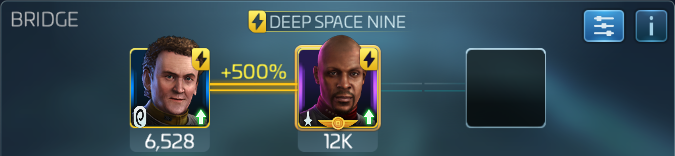
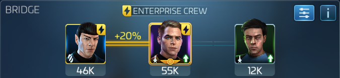

Borg Armadas
Borg Cubes and Mega Cubes (group)
Run these in your vidars. 5/6/Khan or Sisko/Miles/6 for dps. One person run Sisko/Miles/Gorkon or Lorca for Hullbreach
Borg Spheres (Solo)
Solo Borg armadas are run with Three of your own Ships. The fights are short and you get a huge damage boost from research in the combat tree, so ramping damage and burning add very little to your total damage. Focus on mitigation, extra shots, mitigation, and critical damage. Hull breach provides a huge damage boost and should always be run with either Lorca or Gorkon on one ship.
Research
There is research in the combat tree at the far end of it to buff damage for Federation, Romulan, Klingon, and the ISS Jellyfish. Grab every one that's relevant to any ship you want to run at your solo armada.
Mitigation
Get an officer running mitigation on all your ships. There are quite a few ways to do this
This is the highest damage output of the three mitigation crews discussed here. Dont bother with changeling kira, she's not very effective. Use Six of Eleven for dps instead, or use the extra spot for hull breach. This crew works very well with Gorkon, because mile's extra shots gives more rolls to activate, and Sisko's crit ramp will essentially guarantee 100% up time on hull breach after only a few rounds.

This is a good middle ground between damage and loot yield. The last slot can go to either khan for dps, or to utility.

Kind of a niche pick, it's interesting because picard's captain maneuver will add a 120% boost to all officer maneuvers. So an officer ability with a value of let's say 10, would have 12 added to it for a total of 22. this means putting either Georgiou or Lorca side car would give them over 100% chance to activate every round.

These crewes do essentially the same thing; regen shields and raise mitigation. Spock's ability to regen shields is largely based on how much defense you can stack lower decks, as well as the tier of your spock. Once you progress beyond 35 uncommon solo armadas, Spock probably wont be regenerating enough shields to make this crew worthwhile. if your morale ship's shields are depleted in your combat log, it might be time to stop crewing Spock and just use another mitigation crew. The choice between Beverly and Zhou is based on their teir, and you should choose whichever has the higher value of defense to mitigation.
On The Enterprise


Smilar to running kirk and Spock on another ship, The Enterprise's ship ability regens shields with no need for Spock. This leaves you with a free officer slot to use for utility or damage.
Important single officers
These go in your empty crew slots
- Khan
- Stacking crit
- Six of Eleven
- Ramping penetration stats
- Gorkon
- Chance on critical hit of procing hull breach for 3 rounds
- Lorca
- Chance at start of round of procing hull breach for 2 rounds
Other officers (I don't have them to test)
The fights are short, so front loading damage with Jadzia Dax's captain maneuver and Julian's officer maneuver might be effective if you can find another way to mitigate damage (cloaking research, cerritos boost, 34 epic mitigation ship skins, other mitigation research)
- Data/Bev/x
- 20% extra crit for the whole fight, mitigation and penetration.
- Julian Bashir
- officer ability provides crit immediately. could be run with Pricard/Bev so a t1 Julian would be adding 44% crit.
- Jadzia Dax
- Captains ability with synergy might be enough to overcome sphere's high mitigation. Maybe run dax sisko miles on a ship you can cloak and boost with cerritos and run hb on something else.